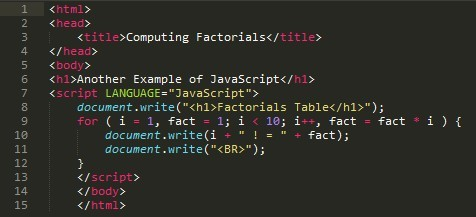
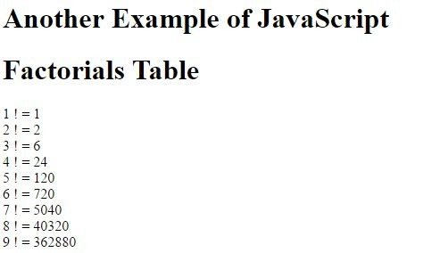

Explanation

บรรทัดที่
คำอธิบาย
8
เป็นการพิมพ์ข้อความออกมา ( h1 คือ หัวเรื่อง )
9
เป็นการวนลูปโดยใช้ลูป for โดยการวนรับทุกตัวจนครบ 9 ตัว
หลังจากนั้นเเอาตัวแปบ fact * i มาเก็บไว้ที่ fact
10
เป็นการพิมพ์ค่า fact ออกมา
11
เป็นการพิมพ์เว้นบรรทัดออกมา
ตัวอย่างผลรันต์
